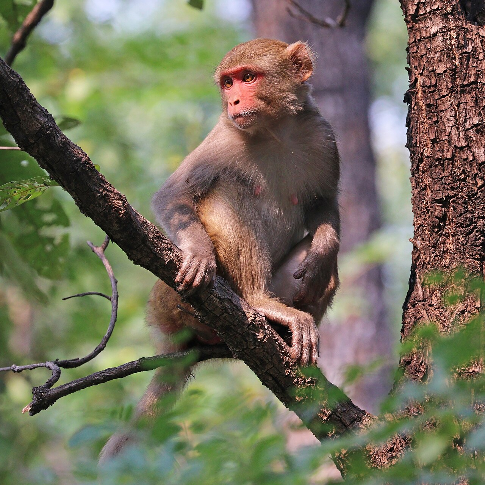
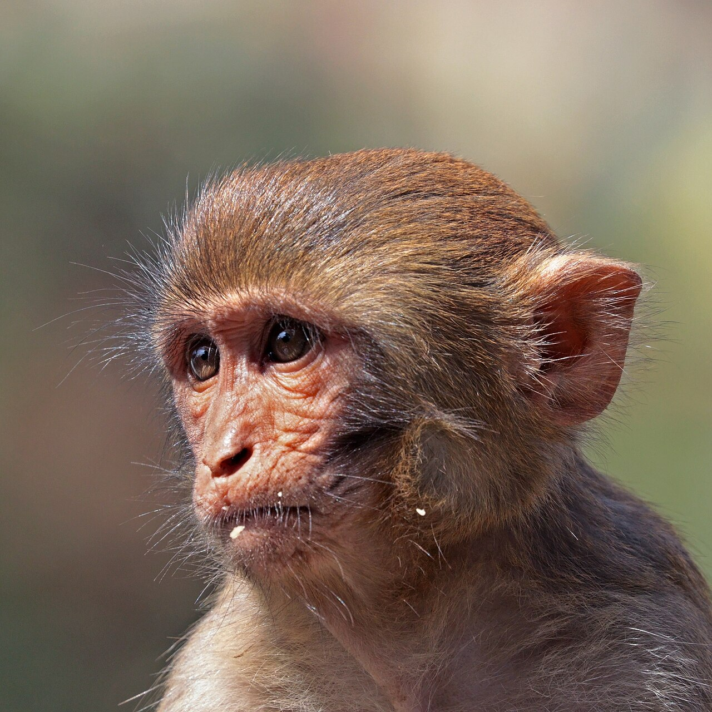
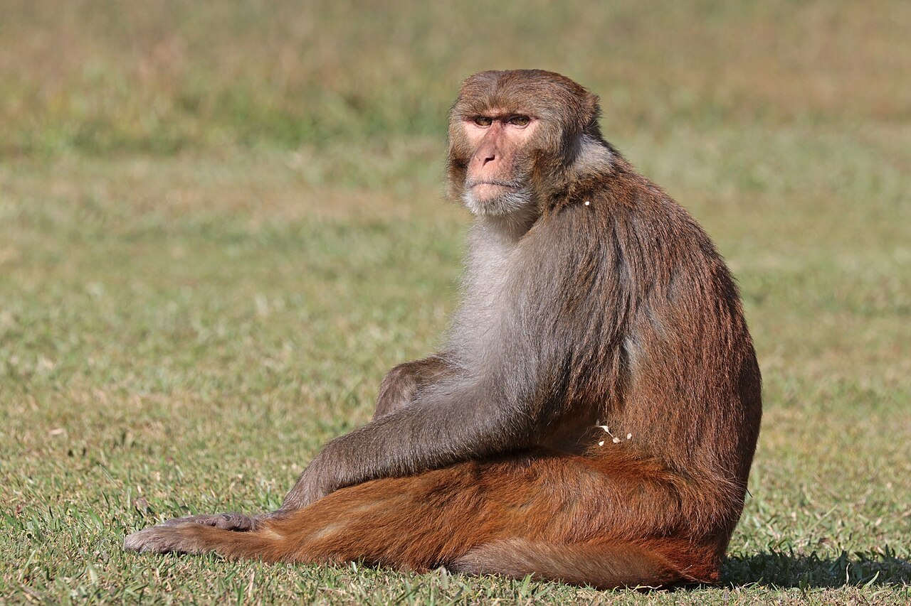
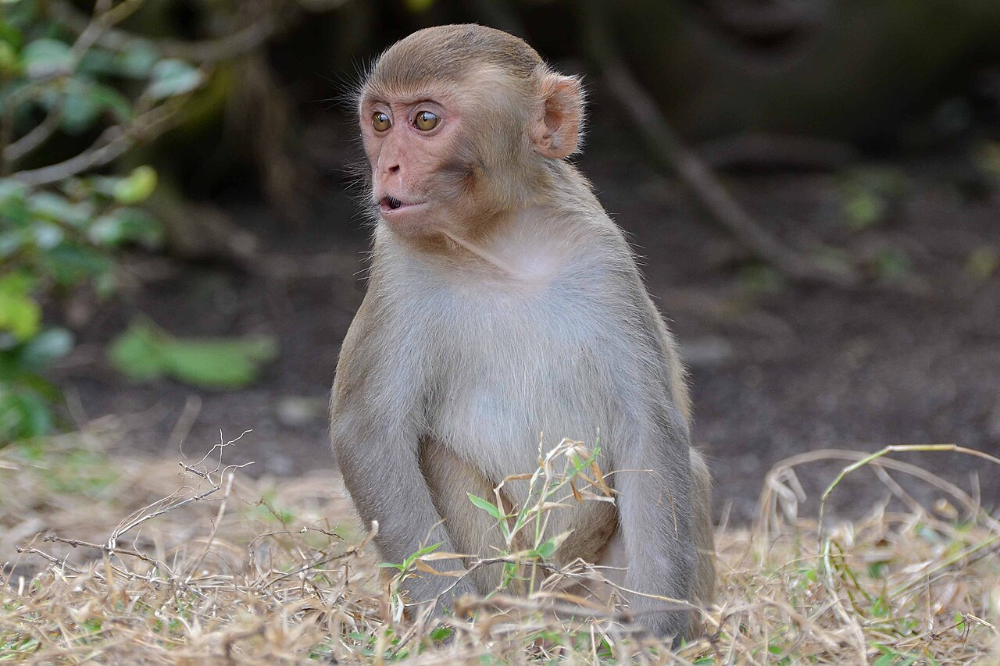

У медичній картці кожного з нас є літера, якої там не було б без цих тварин.
Коли людина вперше здає кров, їй кажуть дві речі: групу і резус. Плюс або мінус. Це настільки буденно, що ніхто не питає, звідки взялося саме слово «резус».
Воно взялося від мавпи.

Карл Ландштайнер, той самий, що двадцятьма роками раніше відкрив групи крові, працював з Алексом Вінером над новим питанням: чи є в людській крові ознаки, про які ще ніхто не знає.
Вони взяли еритроцити резус-макак і ввели їх кролям і морським свинкам. Ті виробили антитіла. Коли цими антитілами подіяли на кров людей, кров приблизно вісімдесяти п'яти зі ста людей починала склеюватися, а решти — ні.
Так з'явився поділ на резус-позитивних і резус-негативних. Назву дали за джерелом: антитіла отримали завдяки Rhesus — звідси Rh.
Резус-конфлікт — це коли у резус-негативної матері розвивається дитина з позитивним резусом. Організм матері може почати руйнувати кров дитини. До того, як навчилися це передбачати й зупиняти, через це помирали немовлята.
Сьогодні резус перевіряють усім вагітним, а резус-негативним жінкам вводять імуноглобулін. Тому в більшості країн гемолітична хвороба новонароджених стала рідкістю.
Той самий аналіз роблять і донору перед здачею крові — щоб вона точно підійшла тому, кому її переллють.


Пізніше з'ясувалося, що антитіло, яке Ландштайнер і Вінер отримали від макак, — найімовірніше не те саме, яке сьогодні визначає резус у людини. Воно діяло на інший антиген, який згодом назвали LW, на честь самих Ландштайнера й Вінера.
Антитіло, що справді відповідає за резус-конфлікт, роком раніше знайшли Філіп Левін і Руфус Стетсон — і знайшли його в людини, у матері, яка втратила дитину.
Тобто назва «резус» історично трохи випадкова. Але вона лишилася, і щоразу, коли лікар пише в картці «Rh+», він згадує мавпу, навіть не думаючи про це.
У грудні 1938 року на маленький острів біля Пуерто-Рико привезли кількасот резус-макак, спійманих в Індії. Колонію заснував Кларенс Карпентер — щоб у дослідників були здорові тварини: серед тих, кого везли з Азії, майже всі хворіли на туберкульоз.
Острів існує досі. Там живе близько тисячі восьмисот макак, уже дев'яте покоління. За всю історію колонії через неї пройшло понад одинадцять тисяч тварин.

Донорство крові тримається на тому, що хтось колись з'ясував, чия кров кому підходить. Частину цього знання отримали не люди і не добровольці.
Здати кров — це п'ятнадцять хвилин і власне рішення. Варто пам'ятати, що право на це рішення комусь дісталося без вибору.
_female.jpg){kind=link}
_juvenile_head_Kathmandu.jpg){kind=link}
,_male,_Gokarna.jpg){kind=link}